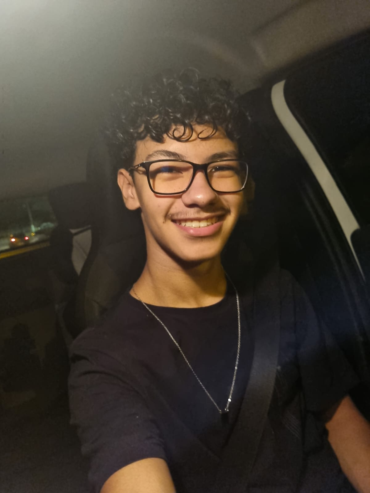

Lua
C++
Kotlin
Atualmente desenvolvendo jogos com Lua
Olá, eu sou
Olá, eu sou
Gustavo Walter
> _
Transformo ideias em experiências interativas — de sites que colocam negócios no ar a jogos que colocam diversão na tela.
- 1 anocriando sites
com WordPress - 7sites em
destaque aqui - Luano dia a dia
com jogos

01 · Sobre mim
Da web para os games.
Sou o Gustavo Vieira Walter, desenvolvedor de Lages - SC. Passei um ano criando sites em WordPress para clientes de áreas bem diferentes — saúde, comércio, turismo, cultura e setor público — transformando a necessidade de cada um em um site no ar.
Hoje trabalho com desenvolvimento de jogos usando Lua, onde a lógica de programação que sempre gostei vira mecânica, sistema e diversão.
Também estudei Desenvolvimento Full-stack em 2025 na Academia do Programador e curso Sistemas de Informação na Uniplac.
local gustavo = {
cidade = "Lages - SC",
foco = { "Jogos", "Web" },
linguagens = {
"Lua", "C#", "JavaScript",
"Kotlin", "C++", "SQL",
},
xp = 0,
cafe = math.huge,
}
function gustavo:proximoNivel()
self.xp = self.xp + 1
return "sempre aprendendo"
end
02 · Jornada
Experiência & formação
-
Atual
Desenvolvedor de Jogos
Lua
Desenvolvimento de jogos com Lua, implementando funcionalidades e sistemas de gameplay.
-
1 ano
Desenvolvedor Web
WordPress
Criação de sites institucionais e lojas virtuais para clientes de saúde, varejo, turismo, cultura e setor público.
-
2025
Desenvolvimento Full-stack
Academia do Programador
Formação prática com C#, .NET, HTML, CSS e banco de dados SQL.
-
Cursando
Sistemas de Informação
Uniplac
Graduação com base em engenharia de software, banco de dados e lógica de programação.
03 · Arsenal
Habilidades
As ferramentas que carrego na mochila — cada uma desbloqueada em algum projeto.
WordPress
HTML
CSS
JavaScript
Bootstrap
C#
.NET
SQL
Git
GitHub
VS Code
04 · Level select
Projetos
Passe o mouse para ver o projeto em movimento e clique para abrir em tamanho grande.
05 · Player 2
Bora criar algo juntos?
Tem um projeto, uma vaga ou só quer trocar uma ideia? Me chama em qualquer um desses canais.
Lages - SC - Brasil